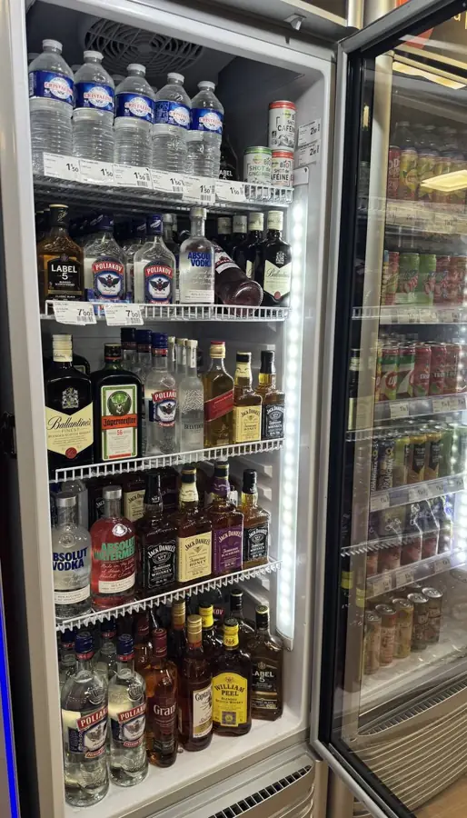

Épicerie
Pâtes, conserves, café, biscuits, chocolat, chips pour l'apéro : tout ce qu'il faut pour remplir le placard ou dépanner un repas.
Proxi Dombasle
Ouverte 7j/7 · Livraison dans un rayon de 15 km par la route

Présentation
Au cœur de Dombasle-sur-Meurthe, Proxi Dombasle dépanne le quartier tous les jours de la semaine. Un oubli pour le dîner, une soirée improvisée, un frigo vide le dimanche : passez nous voir, on a de quoi vous aider.
Contactez-nousServices
De l'épicerie de base aux boissons fraîches, l'essentiel est en rayon. Et si vous ne pouvez pas vous déplacer, on vous livre jusqu'à 15 kilomètres par la route.
Pâtes, conserves, café, biscuits, chocolat, chips pour l'apéro : tout ce qu'il faut pour remplir le placard ou dépanner un repas.
Charcuterie, fromages, fruits et légumes, mais aussi pizzas, plats prêts à réchauffer et glaces pour les soirs sans cuisine.
Des frigos bien remplis : eaux, sodas, boissons énergisantes, bières, vins, champagnes et spiritueux, servis frais.
Un coup de fil suffit : on prépare votre commande et on l'apporte chez vous, à Dombasle et jusqu'à 15 km autour.
Quand les grandes surfaces ont fermé, Proxi Dombasle prend le relais : courses du quotidien sur place ou livrées chez vous, y compris le dimanche.
Zone de livraison (15 km par la route) : Dombasle-sur-Meurthe, Varangéville, Saint-Nicolas-de-Port, Rosières-aux-Salines, Sommerviller, Haraucourt, Crévic, Art-sur-Meurthe, Damelevières, Laneuveville-devant-Nancy, Fléville-devant-Nancy, Saulxures-lès-Nancy, Einville-au-Jard, Heillecourt et les communes alentour.
Contact
Pour une question, une commande ou une livraison, le téléphone reste le plus simple. On décroche 7 jours sur 7.
L'abus d'alcool est dangereux pour la santé, à consommer avec modération. La vente d'alcool aux mineurs est interdite.